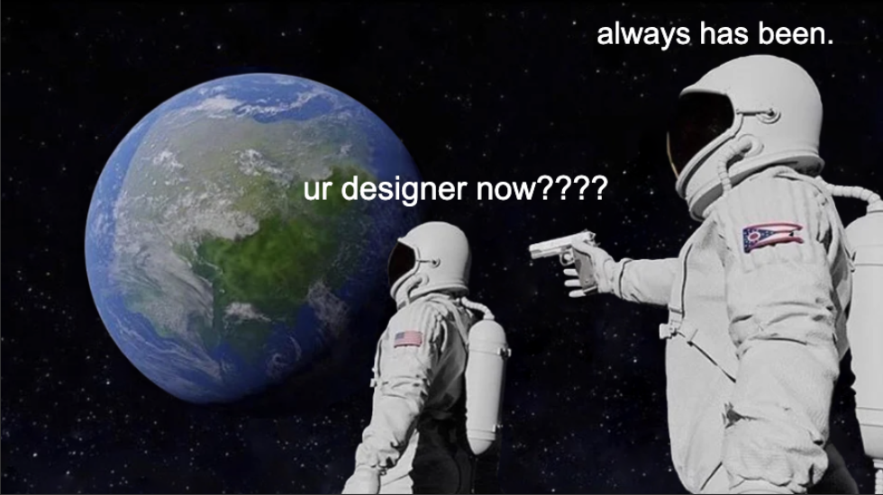
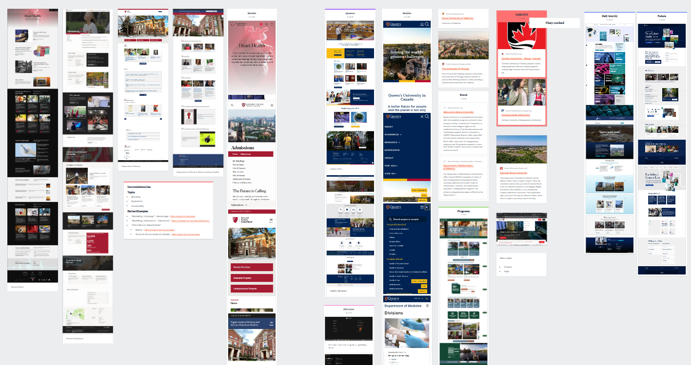
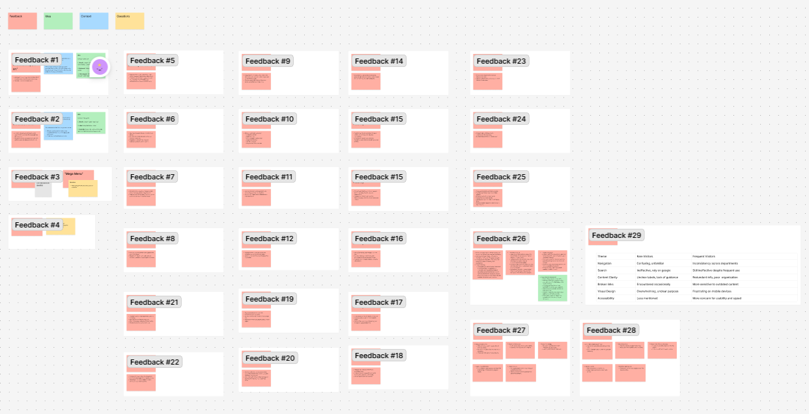
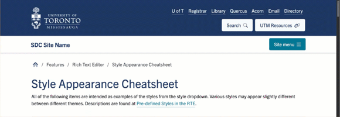
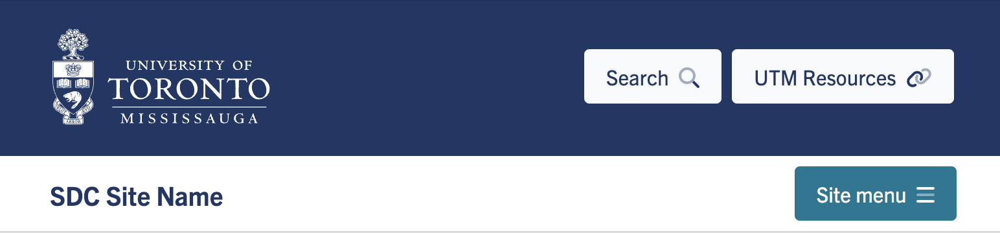
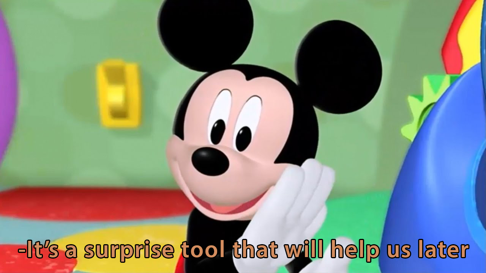
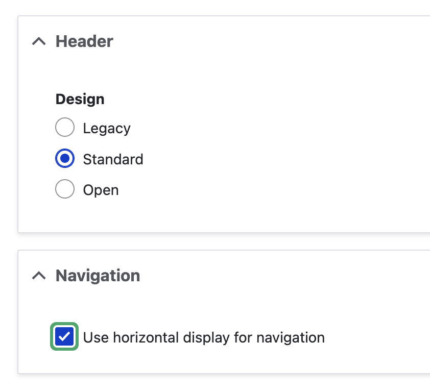

Web Refresh - Part One: Design
A dev blog entry... but design first.The Project
Our partners (Comms) initiated a web refresh project in late 2024 to improve the sites as a marketing and communications tool to foster trust, serve as an authoritative source of information, encourage meaningful action, and deliver a seamless, engaging experience for a diverse range of users.
Phase 1 ended in May 2025 and at this stage of the project, we recommended to do UX testing of the current sites. Despite our insistence that Phase 2 should be user research with prospective students, there was a directive and pressure to proceed with "design and development".
An external vendor was initially planned to handle the design phase to deliver designs by June 2026 which I&ITS would subsequently develop. Our partners put their efforts into securing funding and the RFP for most of 2025.
The project was rescoped in November 2025 to be entirely done in-house with an imposed implementation date of June 2026, meaning the team had to action both phases within the timeline they allocated for a vendor to deliver just design. My team and I were tasked with the fun challenge to implement a platform-wide redesign of our sites with minimal resources and even less time.
It was desperate enough that I (a full stack developer) had to dust off my designer hat.

Information Gathering
Without the time and resources for a in-depth research phase, I had to be resourceful and gather any material that would aid in designing a solution.
1. Literature Review
a) Phase 1 Materials
As mentioned, our partners ran a discovery phase that resulted in data from:
- User surveys (Editors, Students, Staff & Faculty)
- Stakeholder Interviews
- Feedback
- Vendor Commissioned Market Research
There were gaps in the methodology (they said they wanted to target prospective students, but there was no prospective student materials), but the raw documents were available and I was able to revisit and review the interviews, survey results, and feedback as a starting point when the project was re-scoped.
b) Pre-existing research and resources within the institution
-
UTSC's Admissions project report
- Colleagues from Scarborough campus generously shared their findings on their recent redesign project.
-
Innovation Hub
- The Innovation Hub does a lot of work designing for student experiences so I reviewed resources they have available that might be helpful for us
2. Doing What I Can
The lack of funding and time, especially in comparison to the other groups within the institution working on similar projects, severely limited information I had access to. I just tried to do everything I could think of to propose feasible solutions that were achievable within the given timeline.
a) Analyzing competitor sites and reviewing analytics
- Analyzing what other university sites do. Evaluated what may work for us, what may not
- Looking for common patterns that students might already have in their mental models
- Reviewing trends in existing site analytics (Google Analytics)
{kind=link}

Moodboardb) Reviewing our backlog of reported pain points and feedback
I laid out known issues and ideated on how we can address them from the lenses of Design & Development, Governance, and Content Strategy.
{kind=link}

Feedback Reviewc) Mapping exercise
I woke up one Saturday and asked myself: how do I want to ruin my day? And I looked at the UTM main site home page. I mapped out all the entry points available on that page just out of curiosity. I wasn't sure what I would even learn exactly but I was surprised with the insights I was able to glean.
Some of the takeaways:
- The home page is a signpost page with poor contextual guidance/pathing/direction
- There were entry points that had the same label that led to different destinations
- There were entry points that led to the same destination but had different labels
- There's plenty of deviation from expected patterns (in content, presentation, and language) that causes confusion
- Conflicting context for the menu. The main navigation is being used for additional 'content' (IE, using it to represent someone's departmental structure rather than the content they can find in the site)
These insights were helpful in deciding the direction we want to go towards. It revealed that a lot of underlying issues were rooted in content strategy that a technical solution alone couldn't address. This was particularly important as our partners insisted to frame this project as "technical only" and it helped drive the point that any solution we do should be holistic and include considerations for all three of our pillars.
{kind=link}
{kind=link}
Problem Statements
I was able to identify some things we could address to improve the current experience within the constraints of the project. Given the reality of the situation, it was scoped to:
- Problems that can holistically (Governance, Content Strategy, Design & Development) be actioned within the timeline
- Identified errors / pain points
The team chose to focus on the following problems:
1. Users don't know or forget which site they are on
For context, there's a seamless transition between sites because of the intentional consistent look and feel across the entirety of the platform and this is especially true when they are within the body of a page. A good amount of cross linking that happens when users traverse the sites. For example, content might lead someone fromHomepage -> Future Students -> Careers. That's three
different sites, with three different navigational structures and it's not obvious to
the user that that's happened.
2. Users miss the interactable items in the header (menu, search)
Icon-only interactable elements lack meaning and are easily missed by users. Labels are very important. Placement of the local site's menu in the global header associates it with the global campus as opposed to the local subsite they are in.
3. The elements in the header are not cohesive and have competing priorities
There's entry point overload. Clutter adds to confusion and makes the presentation of it look overwhelming and hard to navigate. It is prime real estate and everyone has an opinion on what goes up here, but it needs prioritization so that hierarchy can be presented visually. Focus is important. "If you try to show everything, you end up showing nothing." The motivation around this project was to cater to students.
4. Inconsistent design patterns from site to site or even within the same site
The different patterns from page to page causes confusion.
Approach
Here are the general approach we took to address the above problem statements:
- Group elements contextually
- Organize entry points and provide clear labels
- Enhance visual and behaviour of elements
- Add flexibility to support content strategy
Solutions
The problem statements affected our global header so the solutions are targeted towards it. I started with a chart to align the solution to the problems it spoke to and created wireframes.
The imposed timeline limited the amount of iterations we could do. We identified that as a risk despite scoping the changes to cause minimal disruption, but leadership directed us to proceed regardless.
{kind=link}
{kind=link}
The goal at this stage was to have two mockups by the end of January 2026 to present to stakeholders. I dedicated December 2025 to design solutions to give the team a chance to discuss and iterate in January. The following solutions were what I came up with to address the problems. Both mockups embody the same solutions but had some parts with a different presentation.
{kind=link}
{kind=link}
1. The elements are grouped contextually
- Global items like the logo, quicklinks, global menu, and search are grouped together
- Site name and site menu are together on a separate bar
- From a visual design point of view, colour is used to further create that
separation in context
- Primary UofT blue for the globals to anchor the page
- Off-White / light variations for site specific
- Secondary blue for the site menu button so it is the most prominent button in the header area
2. The entry points have been organized and cleaned up
- The quicklinks were prioritized for most frequent users of the sites (current students) based on the feedback and focused on academic tools and resources
- The rest of the entry points have been unified and reimagined as a global
menu
that opens up in a modal/canvas that offers a lot more real estate for these
links.
- It allows categorization and contextualization of these links. It is important because what people consider "quick links" can have different purposes
- There's also room for potential marketing opportunities such as call to actions for seasonal content or campaign related content
This piece is where I explored two different presentations between the two options.
- In Option A, it is a full screen modal
- The search input is also in this it and the search button triggers the same modal but auto focuses on the input
- We hypothesized it would give flexibility
- A search bar is readily available in case they do not see an entry point they were expecting if they click on the global menu
- And on the other hand, they might intend to search but might immediately see an entry point for something they were looking for
- In Option B, it plays with the space more
- By moving the logo elsewhere it doesn't have to be as tall and
we
can maximize the horizontal space
- Search is readily available
- Blue bar compliments the off canvas
- The close button / trigger is in the same spot
- Quicklinks and search are still visible, so you don't have to repeat it in the canvas itself, which buys a lot more real estate
- Site menu is farther away in proximity from the global menu
- By moving the logo elsewhere it doesn't have to be as tall and
we
can maximize the horizontal space
3. Site bar remains sticky on scroll
- It will always be accessible and visible throughout their experience to inform users of what site they are on as well as access to the site's menu
- Progress bar indicator for how far they have scrolled and offer a bit of visual interest

4. Site menu
The site menu itself is the same pattern and functionality as the current sites with a different paint job to match the new design direction.
We aren't saying that it is perfect as is, nor are we disputing that a horizontal menu will out perform a toggle menu. But changes to the menu were specifically out of scope for this MVP due to the existing menus with data across ~100ish sites needing content strategy and governance, and that is something that Comms can't address within the timeline.
However, it can be actioned on the product side.
Horizontal Nav / Priority Plus Menu
Brand had concerns about the lack of horizontal navigation and said that we should not go ahead with any solutions that modified the header at all (despite the fact that the toggle menu pattern wasn't changing from current).
Rejecting all of the solutions based on concerns about something that was defined as out of scope for this round is, frankly, terrible.
There's nothing wrong with addressing pain points and establishing a better baseline for when we can conduct an in-depth UXR phase. There is no value in a purely aesthetic redesign because it doesn't address underlying issues.
There was no convincing them, so I've decided to prepare something to have in my back pocket.
I've prepared a variant with a horizontal menu with overflow handling just to alleviate any display breakage as a result of having a million nav items. It does not save the sites from having poor content strategy. It defaults back to the default menu on mobile.
From a frontend dev standpoint:
- The product is capable of leveraging feature flags to implement it with controls (IE, enabled/disabled for the specific sites in the platform, or even just the main site)
- It has a number of limitations and would require heavy content strategy and governance to accompany the technical guardrails



5. Content strategy support
The body will be supported by a net new content type with flexible page building and configurable components. Essentially, it would be giving the content strategists a landing page for marketing-leaning use cases that would have flashier components such as Heros, Stats, Sections, Spotlight, etc.
Presentation
The core team collaborated in January to iterate and finalize the design options for the stakeholder presentation. Despite the challenging timeline, we were able to deliver the following options on time by the end of January 2026.
I led the presentation to the principal and her senior leadership table as I was the one who could speak to the design thinking around the decisions made and give context to the problems we were solving.
User Testing & Concerns
In February 2026, the project deviated from the rescoped plan timeline.
Development was supposed to start mid February after getting the principal's blessing, which would keep us on track for a June go-live. It wasn't a very accommodating timeline to begin with, but there weren't a lot of options with such a tight project.
However, our partners injected a testing phase in the timeline which pushed the go-live date to move to August 14, 2026, but the development start date was left undetermined as it was dependent on the results of the testing and decisions that needed to be made.
Comms engaged with Brand and a vendor to do user testing. I wasn't part of the engagement, but I've expressed concerns early on about the questions they focused on and the methods that they planned to use.
Their focus was not aligned with the problem statements and the scope that the solutions were for. They said their intention was to glean design behaviour but the protocol and the materials did not align.
At that point, we might as well have started the design phase over if they were going to action the research we recommended at the beginning of Phase 2 instead of actually validating the solution within the same scope it was made for.
1. Lack of accurate content
A lot of the issues from the discovery and subsequent analysis that I did were content related, but everyone was disproportionately focused on the visuals.
Content strategy is something our partners oversee and the content in the mockups aren't finalized. Content/labels/etc used for the mock ups are based on existing content but largely serve as placeholders.
It would have been great to test real content. It would have been nice to determine that labels were appropriate.
2. Secondary toggle menu
Due to the time constraints, I was unable to validate the solution to determine if the contextual separation between the global and local menus were enough. I wanted insight on whether it distracted from the local menu, as well as on what label was appropriate to use.
Because I didn't feel the questions Comms were asking in their user testing engagement aligned with my concerns, I've created a simple click through prototype to test a hypothetical flow, asking users to find a specific department's contact information starting from the main site.
I showed Comms and asked if they can include it in their vendor engagement, but they said they couldn't. I took the initiative to conduct my own test. I went around campus and asked students to do the test on my iPad. It's not comprehensive. It's also technically not official. But I wanted to validate my solution.
When I conducted the test, I was happy to see that the sticky behavior was doing the heavy lifting on keeping the focus on the local menu, especially when they scrolled. I was also surprised to see that most people scrolled to the bottom of the second screen. When I asked them, they said "I usually find contact information at the bottom of the page". The prompt ("Can you find the Biology Department contact information?") could have influenced the behaviour, but it was good insight that would be helpful for content strategy.
Overall, I found the global menu didn't distract away from the local menu, especially when users scroll and the local menu sticks.
Whether or not the users even care about the global menu, I don't know. The only reason it exists in this design is because of stakeholder interest.
While the motivation for the redesign project was prospective student focused, the desire to be recruitment forward is not being applied to something that is specific to prospective students. It isn't a singular site like (future.utoronto) or (utsc/admissions). Our design is being applied platform wide.
Therefore, it would be irresponsible to make platform-wide changes while only considering the needs of a certain user group.
The contents of the global menu are largely entry points from the link farms that currently exists in the homepage. In our design, we prioritized content catered to students and filed all other pieces under the global menu. The trade off for content that has been filed behind the toggle is it is now a global piece that's accessible from every page within the platform instead of a single page where not all journeys start.
The inspiration was UBC's search, where there are entry points to complement the search input field. Their intention is to offer search, so it only signals search. The difference in our case is Comms wants to specifically indicate there are resources to be found, which means it needs its own trigger to indicate so.
Design System
We had an existing system, but only on the front-end side. I took the opportunity to establish the system in the prototyping tool (Figma) as well. Even though I don’t need to worry about dev hand off, I like to use it as a planning tool to define the variables, style tokens, scales, etc., as well as variants and states of components.
My goal for the design system is to have complete parity with our front-end framework. The specs defined in Figma, such as variables, utilities, and rules, can be integrated directly in the front-end compile/build. This mitigates inconsistencies with the design and what is delivered in the end product.
{kind=link}
{kind=link}
Dev Stuff
It is now June.
We had a dev kick off meeting May 29th. Four months after an impromptu testing phase, it has yielded no outcomes.
The good news is, our partners finally decided on which option to develop (Option A). The bad news? The timeline of an August 14, 2026 go-live date did not change.
If I survive this, I will expand on:
- Feature flags
- Complete design system parity with by incorporating custom maps / utility and component states / variants in the front-end framework
- Deployment
To be continued...
{kind=link}